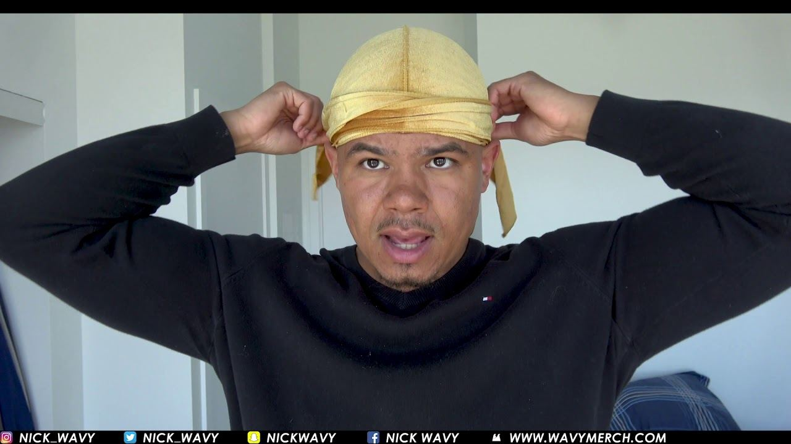

Reading a Durag Like a Buyer: Stitching, Tails and Fit Checks
Two durags can look identical in a photo and behave completely differently on your head. The difference is construction, and construction can be judged in about sixty seconds if you know what your eyes and hands should check. This buyer's guide covers the three inspections that matter — stitching, tails, and fit — the same checks behind the measurements durag.store publishes for its own lineup (a 100cm tail, a 49cm body, a 17cm band, as a reference point). Nick Wavy's (@nick_wavy) tie tutorial below shows what a well-built durag lets you do.
Stitching: where cheap durags confess
Run your eye along every seam. Quality stitching is even, straight, and consistent in spacing; bargain stitching wanders, bunches the fabric, and skips. Pay special attention to where the tails meet the body — that junction takes all the stress of every tie, and it is the first place a cheap durag tears. A reinforced junction is a hallmark of a durag built to be tied daily.
Gently stretch the fabric beside a seam. The stitching should flex with the fabric; if threads pop, pucker hard, or the seam gaps open, that durag is living on borrowed time. Inside-out construction matters too: the smooth side of the seams should face your hair when worn seam-out.
Tails: length is function
Measure or estimate the tails. You need enough length to wrap around the head, cross at the front, return, and tie or tuck with something left over. On an adult head, tails under roughly 90cm total working length start feeling short; the 100cm class is where tying becomes easy and stays easy late at night when your hands are tired.
Width matters as well. Wide tails spread pressure across the forehead band area and stay flat; skinny tails roll into cords that dig and leave lines. If a listing's photos show the tails twisted or folded, suspect they are narrower than they appear.
Fit: the on-head verdict
On your head, the front band should sit level and stay level when you shake your head gently. The cape should cover the back fully without pulling the front edge up. The fabric over the crown should lie smooth with no tenting — tenting means the body is cut small for your head, and no tie technique fully fixes a small cut.
Buy for the head and hair you have now, including your wolf. A durag that fits a fresh cut may strain at week six of growth; if you wolf seriously, make sure your rotation includes room for the longest weeks. Fit is not a detail — it is the difference between compression that trains and fabric that merely visits.
Watch: the standard tie from Nick Wavy — a good tie is only possible on a well-built durag
Video: “Durag Tutorial: How To Tie A Durag In 20 Seconds!” by Nick Wavy (@nick_wavy) · Watch on YouTube
Shop the gear
Everything in this guide runs on the right gear: a durag that holds compression without slipping, a cap that stays put, and fabric that treats your hair right. The durag.store launch lineup is built to that standard — dual-layer construction, long tails, and stitching made to survive the routine. Join the launch list and use code GOLDSTANDARD for 15% off your first order.
Keep learning
- The Best Durag for 360 Waves: A Buying Guide Without the Hype — Basic · Buying Guides
- Durag Sizing and Tail Length: Getting the Numbers Right — Intermediate · Buying Guides
- Pomade Types for Waves: Water-Based, Oil-Based and Everything Between — Basic · Buying Guides
Sources: Video — “Durag Tutorial: How To Tie A Durag In 20 Seconds!” by Nick Wavy (@nick_wavy), youtube.com. Guide written by the durag.store Wave Lab.